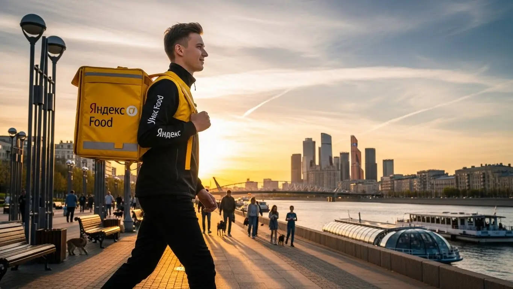
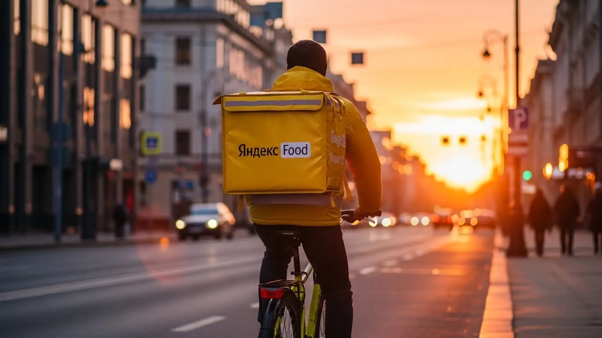

Работа курьером Яндекс Еда в Электростале 2025-2026: доход и условия

- Работа курьером Яндекс Еды в Электростале: для кого эта вакансия и что вы получите
- Сколько вы будете зарабатывать курьером в Электростале: калькулятор дохода и разбор выплат
- Реальный заработок курьера в Электростале: смены и месячный доход
- График работы и форматы занятости
- Требования к кандидату и документы
- Самозанятость, налоги и юридическая чистота
- Пошаговое оформление и первый выход на линию в Электростале
- Пешком, на вело или на авто: что выгоднее в Электростале
- Районы, маршруты и «топовые» зоны заказов в Электростале
- Безопасность, страховка, штрафы и оплата простоя
- Плюсы и возможные минусы работы курьером в Электростале
- Реальные истории и отзывы курьеров из Электростали
- Ответы на главные вопросы о работе курьером Яндекс Еды в Электростале
- Короткие ответы на главные вопросы
- Заключение: твои следующие шаги в Электростали
Все города
Думаешь крутить педали или жечь бензин по Электростали в желтой куртке? Наверняка уже прикинул, сколько заработаешь, но боишься, что убьешь велик на наших дорогах, а доход съедят штрафы и простои в пробках на Мира или Ленина. Давай начистоту: работа курьером Яндекс Еда в Электростале — это не просто «взял заказ — отвез». Это своя математика и свои подводные камни, о которых в рекламе молчат.
Без понимания, как устроен город с точки зрения доставки, ты рискуешь в первый же месяц разочароваться. Одно дело — возить заказы по плотному Восточному району, и совсем другое — тащиться в частный сектор за Ногинским шоссе. Твой реальный доход — это не цифра в приложении, а то, что останется после вычета налога, бензина или амортизации. А еще есть рейтинг, который напрямую влияет, дадут ли тебе самый «жирный» заказ или отправят за тридевять земель за копейки. Большинство новичков в Электростали наступают на одни и те же грабли: берут невыгодные заказы, теряют время в «мертвых» зонах и не знают, когда и где самый пик спроса.
В этом гиде мы всё разложим по полкам. Мы честно посчитаем, сколько можно заработать пешком, на велике и на авто именно в Электростали. Я покажу на примерах, в каких районах больше всего заказов, а куда лучше не соваться в час пик. Разберем, как погода и сезонность влияют на доход, за что реально штрафуют и как этого избежать. И, конечно, выясним, что предлагают конкуренты прямо здесь, у нас в городе, и стоит ли оно того. Если вы хотите сразу увидеть краткую сводку условий и подать заявку, вся информация собрана на странице работа курьером Яндекс Еда в Электростале, где есть калькулятор дохода и анкета.
Меня зовут Алексей. Я сам не один год откатал курьером по этим улицам, а сейчас у меня свой небольшой таксопарк-партнер. Так что всю эту «кухню» я знаю с обеих сторон — и как исполнитель, и как тот, кто помогает ребятам выходить на линию. Никакой рекламной шелухи, только факты и личный опыт. Готов? Тогда давай по порядку, сейчас всё разложу.
Прежде чем нырять в детали, давай быстро пробежимся по главным темам статьи. Это поможет сориентироваться.
Что ты точно узнаешь из этого разбора
В этой статье ты ТОЧНО узнаешь:
- Сколько реально можно заработать в Электростали за смену и за месяц пешком, на велосипеде и на авто?
- В каких районах Электростали больше всего заказов и как ловить «фиолетовые зоны» с повышенной оплатой?
- За что на самом деле штрафуют и как работает оплата простоя, если заказов вдруг нет?
- Что такое самозанятость, как платить налоги и почему это проще, чем кажется на первый взгляд?
- Что выгоднее выбрать для Электростали — пешую доставку, велосипед или свой автомобиль, и в чём подвох каждого варианта?
- Как правильно планировать смены и выбирать слоты в приложении, чтобы зарабатывать больше, а уставать меньше?
А если тебе некогда читать всю статью — переходи сразу к заключению, где ты найдёшь короткие ответы на все эти вопросы и указания, в каких разделах искать подробности.
А чтобы было нагляднее, вот ключевые цифры по работе в Электростали в одной картинке.
Работа курьером в Электростали: ключевые цифры
Доход в час
350–500 ₽
В часы высокого спроса, с учетом бонусов и коэффициентов.
Заработок за смену
2800–3800 ₽
Средний показатель за активный 8-часовой слот в городе.
Нагрузка
2-4
Заказа в час, в зависимости от района и способа передвижения.
График
Свободный
Выбирайте удобные слоты от 2 часов и работайте когда удобно.
Работа курьером Яндекс Еды в Электростале: для кого эта вакансия и что вы получите
Давай по-честному разберёмся, кому в Электростали действительно зайдёт работа курьером, а кому лучше и не начинать. Это не просто «беготня с сумкой», а вполне себе серьёзный способ заработать, если подойти с головой. Здесь нет начальников, которые стоят над душой, но и нет фиксированного оклада. Сколько набегал — столько и получил.
Эта работа — отличный инструмент. Для одних это возможность быстро закрыть финансовую дыру, для других — стабильная подработка, а для кого-то и вовсе основной источник дохода. Главное — понять, подходит ли такой формат именно тебе.

Кому подойдёт эта работа в Электростале
Я вижу на линии самых разных людей, но чаще всего эта работа становится отличным решением для нескольких категорий:
- Студенты. Учишься в Политехническом институте или любом другом колледже? График можно подстроить под пары. Вышел на пару часов после учёбы, откатал несколько заказов — вот тебе и деньги на карманные расходы или оплату съёмной квартиры.
- Те, кому нужна подработка. Если у тебя есть основная работа со сменным графиком, например, на одном из местных заводов, то курьерство — идеальный вариант. В свободные дни или по вечерам можно выходить на линию и получать дополнительный доход, который никогда не бывает лишним.
- Люди без опыта. Чтобы стать курьером, не нужны диплом или резюме на пять страниц. Основные требования — смартфон и желание двигаться. Всему остальному научат на коротком онлайн-инструктаже, а специальное снаряжение, вроде фирменного термокороба, выдадут. Это один из самых быстрых способов начать зарабатывать с нуля.
- Водители-курьеры на своём авто. Если есть машина, она может приносить деньги, а не только требовать расходов на бензин и обслуживание. Водители-курьеры зарабатывают больше, так как берут дальние и тяжёлые заказы, особенно в плохую погоду, когда пешие и велокурьеры менее активны.
- Те, кто ценит свободу. Если тебе важен гибкий график и быстрые деньги, это твой вариант. Ты сам решаешь, когда работать, а когда отдыхать. Деньги приходят на карту практически каждый день, не нужно ждать зарплаты месяц.
Главные преимущества для жителей районов Восточный, Северный, Южный
Одно из главных удобств в Электростали — возможность работать буквально в своём районе. Тебе не нужно тратить час на дорогу до «офиса». Вышел из подъезда, включил приложение «Яндекс Про» — и ты уже на смене.
Например, если ты живёшь в Восточном районе, рядом полно жилых домов, а значит, и заказов из местных кафе и магазинов. Жителям Северного района удобно доставлять из торговых центров и ресторанов вдоль Фрязевского шоссе. А если ты из Южного микрорайона, твоя зона — это плотная жилая застройка, где всегда есть спрос на доставку продуктов и готовой еды. Ты работаешь на знакомых улицах, знаешь все короткие пути и дворы, что даёт тебе преимущество в скорости.
Краткое обещание по доходу и условиям
Давай сразу к цифрам. В Электростали активный курьер за смену может зарабатывать в среднем от 2500 до 4000 рублей. Конечно, всё зависит от способа передвижения, количества часов и спроса. При полной занятости, работая 5-6 дней в неделю, вполне реально выходить на доход до 80 000 – 90 000 рублей в месяц. Автокурьеры могут зарабатывать и больше.
Ключевые условия работы курьером просты и прозрачны. Чаще всего сотрудничество оформляется через самозанятость, что гарантирует легальность и быстрые выплаты. Во-первых, это свободный график — ты сам выбираешь слоты и продолжительность смен. Во-вторых, ежедневные выплаты: заработал сегодня — получил деньги сегодня или на следующий день. В-третьих, начать можно без опыта, пройдя короткое и понятное онлайн-обучение. Никаких долгих собеседований и испытательных сроков.
У меня был парень, студент местного колледжа, жил в Северном районе. Ему срочно нужны были деньги на новый ноутбук. Он начал работать велокурьером по вечерам и в выходные. За первые три недели, работая по 4-5 часов в день, он заработал около 35 тысяч. Ноутбук купил и продолжил подрабатывать, потому что понял: деньги живые, график удобный, и он сам себе хозяин. Главное, что он сделал правильно — не ленился и выбирал слоты в пиковое время, когда заказов больше всего.
Работа курьером в Электростали — это не «золотые горы» без усилий, а реальная возможность заработать, управляя своим временем. Она идеально подходит тем, кто готов двигаться и ценит гибкость. Мой совет: если ищешь подработку или быстрый старт, просто попробуй. Ты ничего не теряешь, а первый доход можешь получить уже завтра.

Сколько вы будете зарабатывать курьером в Электростале: калькулятор дохода и разбор выплат
Один из самых частых вопросов от новичков: «Алексей, а сколько я реально буду получать?». Зарплата курьера — это не фиксированный оклад, а конструктор, который ты собираешь сам. Важно понимать, как работает эта система, чтобы управлять своим доходом, а не просто ждать случайных заказов.
Прозрачность выплат — одно из главных преимуществ работы с Яндексом. В приложении «Яндекс Про» ты видишь стоимость каждого заказа ещё до его принятия, будь то доставка из «Яндекс Еды» или «Яндекс Доставки», и можешь отслеживать свой баланс в реальном времени. Давай разберём по косточкам, из чего складывается твой будущий заработок.
Из чего складывается доход курьера
Твой итоговый доход за смену — это сумма нескольких составляющих. Если их знать, можно работать эффективнее.
- Оплата за заказ. Это базовая стоимость, которая включает в себя подачу в ресторан или магазин и вручение заказа клиенту.
- Доплата за расстояние. Чем дальше ехать или идти, тем больше заплатят. Система считает каждый километр маршрута, так что дальние заказы всегда выгоднее.
- Повышающие коэффициенты. Это твой главный инструмент для увеличения заработка. Когда в определённом районе заказов очень много, а курьеров не хватает (например, в обеденный перерыв или в плохую погоду), карта в приложении окрашивается в яркие цвета. Работа в такой «горячей» зоне может умножить стоимость заказа в 1.5, 2, а то и в 3 раза.
- Бонусы. Сервис часто предлагает персональные цели. Например, «выполни 15 заказов за 3 дня и получи бонус 1000 рублей». Это отличная мотивация для тех, кто работает регулярно.
- Чаевые. Вся сумма, которую клиент оставляет в качестве чаевых через приложение, идёт тебе на счёт. 100%, без комиссий.
- Оплата простоя. Это важная гарантия. Если ты выбрал плановый слот, вышел на линию, а заказов временно нет, сервис всё равно начислит тебе минимальную оплату за время ожидания. Ты не останешься с нулём, просто потому что спрос на время упал.
Как пользоваться калькулятором дохода
Чтобы прикинуть свой потенциальный заработок, не нужно гадать. На сайте есть специальный калькулятор. Пользоваться им элементарно:
- Выбираешь свой город — Электросталь.
- Указываешь, как планируешь доставлять: пешком, на велосипеде или на своём авто.
- Двигаешь ползунки, устанавливая, сколько часов в день и сколько дней в неделю ты готов работать.
Калькулятор покажет примерный диапазон твоего дохода за день и за месяц. Понятно, что это не точная цифра до копейки, а ориентир, основанный на средних показателях по городу. Но он даёт вполне реалистичное представление о том, на что можно рассчитывать.
Калькулятор дохода курьера в Электростали
8 часов
5 дней
Примерный доход в месяц:
64 000 ₽
Это примерный расчёт на основе средней ставки по городу (≈400 ₽/час). Реальный доход зависит от спроса, бонусов и вашего графика.
Примеры расчёта для пешего, вело- и авто‑курьера в Электростале
Чтобы было понятнее, вот три реальных сценария для нашего города:
- Пеший курьер-студент. Работает по 4 часа после учёбы в центре, в районе проспекта Ленина и улицы Мира. Берёт короткие заказы из кафе и фастфуда. В среднем за такую смену выходит 1200–1600 рублей. В месяц при графике 5/2 это около 25 000–30 000 рублей — отличная прибавка к стипендии.
- Велокурьер на полной занятости. Работает по 8-9 часов, 5 дней в неделю. Маршруты строит между спальными районами — Западным, Восточным и Южным. За счёт скорости на велосипеде успевает делать больше заказов, чем пеший. Его дневной заработок — 3000–3800 рублей. В месяц это может доходить до 70 000–80 000 рублей.
- Курьер на своем автомобиле. Выходит на линию в часы пик и в плохую погоду, когда коэффициенты максимальные. Берёт крупные и дальние заказы, в том числе в пригородные посёлки. За 8-10 часов активной работы в такой день его доход может составить 4500–6000 рублей и выше. При полной занятости такие курьеры в Электростали стабильно зарабатывают свыше 90 000 рублей в месяц.
Как-то раз в Электростали в январе был сильный снегопад. Многие курьеры остались дома. А я сел в свою машину и вышел на линию. Коэффициенты были просто сумасшедшие, карта горела фиолетовым. Заказы сыпались один за другим, в основном дальние, куда пешком никто бы не дошёл. За один такой 10-часовой день я заработал почти 8 тысяч рублей чистыми. Это был тяжёлый день, но он наглядно показал: кто не боится трудностей и умеет ловить момент, тот и зарабатывает больше всех.
Твой заработок — это не лотерея, а результат твоих действий. Понимая, из чего он складывается, ты можешь планировать смены так, чтобы получать максимум. Мой совет: всегда следи за картой спроса в «Яндекс Про». Лучше поработать 4 часа в «горячей» зоне с высоким коэффициентом, чем 8 часов в «тихой» зоне за копейки. Чтобы увидеть более точные цифры и сразу подать заявку, посмотри актуальные условия на странице работа курьером Яндекс Еда в твоём городе — там есть и калькулятор, и форма для анкеты.

Реальный заработок курьера в Электростале: смены и месячный доход
Теперь, когда мы разобрались с компонентами дохода, давай посмотрим на итоговые цифры в разрезе полной занятости и подработки. Зарплата зависит от трёх вещей: на чём ты двигаешься, сколько часов работаешь и насколько с головой подходишь к делу. Здесь нет начальника, который платит оклад, твой доход в сервисах Яндекса — это результат твоих действий.
Можно выбрать формат подработки, выходить на пару часов после основной занятости и приносить домой дополнительные 15–20 тысяч в месяц. А можно сделать это основной профессией и получать зарплату 70–80 тысяч и больше, если ты курьер на своем авто и готов работать в пиковые часы. Главное — понять, что это не лотерея. Стабильный заработок здесь — это такая же работа, где нужно думать: анализировать спрос, выбирать правильные зоны и время.
У меня был парень, начинал как пеший курьер, в первый месяц заработал около 35 тысяч и был не очень доволен. Я ему посоветовал пересесть на велосипед и перестать работать днём в будни, а сместить фокус на вечера и выходные. В следующий месяц его заработок перевалил за 55 тысяч, потому что он стал работать не больше, а умнее — ловил самые «жирные» часы с высокими коэффициентами.
Сравнение примерного дохода в Электростали
| Тип занятости | Пеший курьер (в месяц) | Велокурьер (в месяц) | Автокурьер (в месяц, до вычета расходов) |
|---|---|---|---|
| Подработка (2–4 часа/день, 3–4 дня/нед) | 15 000 – 25 000 ₽ | 20 000 – 30 000 ₽ | 25 000 – 40 000 ₽ |
| Полная занятость (8–10 часов/день, 5 дней/нед) | 40 000 – 55 000 ₽ | 50 000 – 70 000 ₽ | 70 000 – 100 000+ ₽ |
В итоге, твой заработок курьером в Электростали напрямую зависит от выбранной стратегии. Не жди, что деньги посыпятся с неба, но если подходить к сменам с умом, можно получать стабильный и предсказуемый доход. Мой совет: начни с малого, прощупай почву в своём районе, а потом уже выстраивай график под самые выгодные часы.
Диапазон дохода для подработки и полной занятости
Если ты ищешь подработку на 2–4 часа в день, то цифры будут примерно такие. Пеший курьер в центре Электростали, работая в вечерний пик, может сделать 800–1500 рублей за смену. Велокурьер за то же время заработает больше, около 1000–2000 рублей, так как успеет выполнить больше заказов и покрыть большие расстояния между, скажем, Западным и Восточным районами. Курьер на автомобиле на короткой смене может заработать 1500–2500 рублей, но здесь важно помнить про расходы на бензин.
При полной занятости, то есть 8–10 часов на линии 5 дней в неделю, зарплата совсем другая. Пеший курьер, несмотря на физическую нагрузку, может рассчитывать на 40 000 – 55 000 рублей в месяц. Курьер на велосипеде, как более эффективная боевая единица, — на 50 000 – 70 000 рублей. Водитель-курьер на своём авто — это уже серьёзные цифры, от 70 000 до 100 000 рублей и выше. Но повторюсь, это «грязными», без учёта амортизации и топлива. Чистый заработок будет зависеть от аппетитов твоей машины.
Как район, время суток и погода влияют на доход
Запомни три кита высокого заработка: время, место и погода. Самые большие деньги делаются не в ровные часы, а в пики спроса. В Электростали это обеденное время (примерно с 12:00 до 14:00) и вечер (с 18:00 до 21:00), когда люди заказывают ужины из ресторанов. Пятница, суббота и воскресенье — это вообще отдельная история, спрос высокий почти весь день. В это время в приложении «Яндекс Про» карта города окрашивается в фиолетовый — это зоны с повышенными коэффициентами, где за тот же самый заказ платят в 1.5–2 раза больше.
Погода — твой лучший друг, если ты не боишься трудностей. Как только начинается дождь, снегопад или сильная жара, многие курьеры предпочитают отсидеться дома. А заказов меньше не становится, наоборот. В итоге спрос резко превышает предложение, и коэффициенты взлетают до небес. Вдобавок, клиенты в плохую погоду чаще оставляют хорошие чаевые, потому что ценят твой труд. То же самое касается и районов: в центре, у ТЦ «Парк Плаза» или «Эльград», заказов всегда больше, чем в тихих спальных микрорайонах на окраине.
Советы по увеличению заработка от опытных курьеров
Чтобы зарабатывать больше, не обязательно работать дольше. Во-первых, планируй свои смены. Если есть возможность, бери слоты на вечер пятницы, субботы и в непогоду. Даже несколько часов в такое время могут принести больше, чем целый день в понедельник. Во-вторых, активно используй карту спроса в приложении «Яндекс Про». Видишь, что соседний район «горит» фиолетовым? Не сиди на месте, двигайся туда. Простой в ожидании заказа — это потерянные деньги.
В-третьих, будь гибким. Если у тебя есть и велосипед, и машина, используй их по ситуации. В хорошую погоду и при заказах в центре — бери велосипед, чтобы не стоять в пробках и не тратиться на бензин. Когда льёт дождь или нужно везти крупный заказ на другой конец города — садись за руль. И последний совет: будь вежлив с клиентами и аккуратен с заказами. Хороший рейтинг и чаевые — это не миф, а вполне реальная прибавка к твоему заработку, которая зависит только от тебя.

График работы и форматы занятости
Главный козырь этой работы — свободный график. Но «свободный» не значит «хаотичный». Чтобы он работал на тебя, а не против, его нужно планировать. Ты сам решаешь, когда выходить на линию: хочешь — работай по 2 часа в день, хочешь — по 12. Это идеальный вариант для подработки, если ты совмещаешь с учёбой, другой работой или просто не хочешь жить по расписанию с 9 до 18.
Система позволяет как выходить на линию спонтанно, просто нажав кнопку в приложении, так и бронировать плановые слоты. Плановые слоты дают гарантию минимального заработка в час, даже если заказов будет мало. Это своего рода страховка, которая обеспечивает стабильность. Поэтому большинство опытных курьеров комбинируют: берут плановые слоты на пиковые часы, а в остальное время работают в свободном режиме.
Например, один из моих водителей-курьеров, студент местного филиала МИСиС, выстроил себе чёткую схему. В будни он берёт короткие слоты по 3-4 часа после пар, а в субботу работает полный день. Это позволяет ему и учиться без хвостов, и зарабатывать достаточно, чтобы не просить денег у родителей и оплачивать съёмную комнату. Гибкость графика — это инструмент, и от того, как ты им воспользуешься, зависит твой итоговый заработок.
В конечном счёте, ты сам себе начальник. Можешь устроить выходной в среду, а поработать в воскресенье. Главное — подходить к планированию ответственно через приложение Яндекс Про, чтобы твой рейтинг не страдал и ты всегда получал достаточное количество заказов.
Подработка после учёбы или основной работы
Совмещать доставку с чем-то ещё — самая распространённая практика. Вот пара реальных примеров из Электростали. Первый — студент политехнического колледжа, который работает велокурьером. Он выходит на линию после занятий, примерно с 18:00 до 22:00, и катается по центральным улицам, где много кафе. В месяц у него выходит 15-20 тысяч рублей. Для студента это отличные деньги на личные расходы.
Второй пример — мужчина, который работает днём на заводе по графику 5/2. У него есть своя машина, и он подрабатывает как курьер на автомобиле. Чтобы быстрее закрыть кредит, он выходит на линию в пятницу вечером, а также в субботу и воскресенье на 5-6 часов. За счёт повышенного спроса в выходные и возможности брать дальние заказы, он дополнительно зарабатывает 25-35 тысяч в месяц. Это уже серьёзная прибавка к семейному бюджету, которая не требует бросать основную работу.
Полная занятость: как выглядит типичный день курьера
Если работа курьером — твоя основная занятость, день строится по определённому ритму. Обычно курьер выходит на линию около 10-11 утра, чтобы захватить утренние заказы из магазинов (Яндекс Доставка) и первые обеды из ресторанов (Яндекс Еда). До полудня он может работать в своём спальном районе, а ближе к 12 часам смещается в центр, где концентрируются офисы и рестораны. С 12:00 до 15:00 — первый пик, заказы идут один за другим.
После 15:00 наступает небольшое затишье. Это время для обеда и отдыха. Можно перевести дух, зарядить телефон и подготовиться к вечернему пику. Опытные курьеры в это время не сидят на месте, а перемещаются в зону, где ожидается высокий спрос вечером, например, к крупным жилым комплексам. С 18:00 до 21:00 — самое прибыльное время. Высокие коэффициенты, много заказов еды из ресторанов. После 21:00 спрос постепенно спадает, и к 22:00 можно заканчивать смену, выполнив последние заказы.
Как планировать слоты и выходы через приложение «Яндекс Про»
Приложение «Яндекс Про» — твой главный рабочий инструмент. Именно через него ты управляешь своим графиком. В разделе «Расписание» можно увидеть доступные плановые слоты в разных районах города. Слот — это забронированный отрезок времени (например, с 18:00 до 22:00) в конкретной зоне. Выбирая такой слот, ты обязуешься быть на линии в это время, а сервис, в свою очередь, гарантирует тебе минимальную оплату за час.
Планировать важно. Во-первых, популярные слоты (вечера, выходные) быстро разбирают, так что лучше бронировать их заранее. Во-вторых, на плановый слот нельзя опаздывать. Если ты забронировал смену с 18:00, то ровно в это время ты должен быть в указанной зоне и нажать кнопку «Начать». Регулярные опоздания или пропуски слотов негативно влияют на твой рейтинг Активности. А чем выше рейтинг, тем больше у тебя приоритет при распределении заказов. Поэтому дисциплина и пунктуальность напрямую влияют на твой стабильный заработок.

Требования к кандидату и документы
Многих новичков пугает этап с документами и требованиями. Кажется, что сейчас попросят кипу бумаг, диплом и справку о спортивных разрядах. На деле всё гораздо проще. Яндекс — технологичная компания, и бюрократию здесь свели к минимуму. Главное — быть совершеннолетним, ответственным и иметь смартфон. Давай разберём по пунктам, какие условия и документы тебе реально понадобятся.
Возраст, гражданство и базовые условия
Начнём с основ. Чтобы стать курьером в сервисах Яндекса, тебе должно быть полных 18 лет. Это строгое правило, связанное с материальной ответственностью и возможностью оформить самозанятость. Никаких исключений, даже с согласия родителей, здесь нет.
По гражданству условия тоже чёткие: принимают граждан России и стран ЕАЭС (Беларусь, Казахстан, Армения, Киргизия). Если у тебя паспорт одной из этих стран, проблем с оформлением не будет. Что касается физической формы, то от тебя не требуют олимпийских рекордов. Если ты пеший курьер или передвигаешься на велосипеде, будь готов проводить на ногах несколько часов и проходить в день 10–15 километров. Для водителя-курьера главное — уверенно водить машину и иметь стаж, который соответствует требованиям сервиса.
Какие документы нужны для работы курьером
Список документов на удивление короткий, и большинство из них у тебя уже есть под рукой. Советую подготовить их заранее, чтобы процесс регистрации прошёл максимально быстро.
Вот что понадобится:
- Паспорт. Нужен для подтверждения личности и возраста. При регистрации его нужно будет сфотографировать.
- ИНН (Идентификационный номер налогоплательщика). Он необходим для оформления самозанятости и уплаты налогов. Если ты не помнишь свой номер, его можно за пару минут бесплатно узнать на сайте ФНС или через Госуслуги.
- Банковская карта. Подойдёт карта любого российского банка, оформленная на твоё имя. На неё будут приходить выплаты.
- Медицинская книжка. Она обязательна для работы с заказами из ресторанов и кафе (сервис «Яндекс Еда»). Для доставки посылок и товаров из магазинов («Яндекс Доставка») она чаще всего не требуется. Но я советую её сделать — это расширит список доступных заказов и, соответственно, может увеличить твой доход.
Можно ли работать с 16 лет и какие есть альтернативы
Часто спрашивают, можно ли устроиться в Яндекс Еду в 16 или 17 лет. Отвечаю честно: нет, нельзя. Как я уже говорил, сервис работает только с совершеннолетними курьерами. Это связано с юридическими тонкостями: оформление самозанятости и полная материальная ответственность за заказы и денежные средства.
Если тебе ещё нет 18, а подработка нужна, не стоит отчаиваться. Рассмотри другие варианты, которые доступны подросткам в Электростали. Например, можно раздавать листовки, работать промоутером на акциях в ТЦ «Парк Плаза» или помогать в небольших семейных кафе. Это будет хорошим опытом и поможет заработать первые деньги, а как только исполнится 18 — добро пожаловать в доставку.
Был у меня парень, студент из Электростали, 19 лет. Думал, что оформление — это ад. Собрал целую папку: СНИЛС, военный билет, аттестат. В итоге понадобились только паспорт и ИНН. Медкнижку он сделал за три дня в местной клинике. Заполнил анкету вечером в понедельник, а в среду уже вышел на свой первый слот в районе улицы Мира и за 4 часа заработал первые 1200 рублей. Вся «бюрократия» заняла у него меньше времени, чем он потратил на переживания.
В общем, список требований и документов абсолютно стандартный. Главное — быть старше 18 лет и иметь гражданство РФ или ЕАЭС. Подготовь паспорт, ИНН и карту заранее, и сможешь выйти на линию уже через 1–2 дня после подачи заявки.
Самозанятость, налоги и юридическая чистота
Слова «налоги» и «самозанятость» многих отпугивают. Кажется, что это сложно, непонятно и связано с бумажной волокитой. Забудь эти стереотипы. В 21 веке всё делается через смартфон за 10 минут, и это самый простой и легальный способ получать доход, работая на себя. Давай разберёмся, почему это выгодно и тебе, и Яндексу.
Почему курьеры Яндекса работают как самозанятые
Формат самозанятости (или налог на профессиональный доход, НПД) — это официальный статус для тех, кто работает на себя. Яндекс — это не прямой работодатель, а IT-платформа, которая даёт тебе доступ к заказам. Ты — независимый исполнитель, партнёр сервиса. Именно поэтому ты можешь сам выбирать, когда и сколько работать.
Работать как самозанятый — значит работать «вбелую». Твой доход официален, ты можешь взять кредит в банке или получить визу, предоставив справку о доходах из приложения. При этом нет никакой сложной бухгалтерии, как у ИП: не нужно вести отчётность, сдавать декларации и платить страховые взносы. Всё максимально автоматизировано и прозрачно. Это современный и честный формат сотрудничества.
Как за 10 минут оформить самозанятость через «Мой налог»
Регистрация статуса самозанятого занимает меньше времени, чем заварить чай. Всё делается онлайн, никуда ходить не нужно.
Вот простая пошаговая инструкция:
- Скачай приложение. Зайди в Google Play или App Store и найди официальное приложение ФНС — «Мой налог».
- Начни регистрацию. Открой приложение и нажми кнопку «Стать самозанятым». Самый быстрый способ — «Регистрация по паспорту РФ».
- Отсканируй паспорт. Наведи камеру телефона на главный разворот паспорта. Приложение само распознает все данные. Проверь, чтобы всё было верно.
- Сделай селфи. Приложение попросит сделать фото лица, чтобы подтвердить твою личность. Это быстрая и стандартная процедура.
- Подтверди регистрацию. Проверь все данные и нажми «Подтверждаю». Готово! Через несколько минут тебе придёт уведомление, что ты официально зарегистрирован как плательщик НПД.
Весь процесс действительно занимает 5–10 минут. После этого останется привязать свой статус в приложении «Яндекс Про» и можно начать получать заказы.
Сколько и как платить налоги
Теперь самое главное — деньги. Ставка налога для самозанятых — одна из самых низких в стране. Ты платишь 6% с доходов, полученных от юридических лиц (то есть от Яндекса). Никаких других скрытых платежей или взносов нет.
Процесс уплаты налога полностью автоматизирован. Тебе не нужно ничего считать самому. Приложение «Яндекс Про» передаёт данные о твоём доходе в налоговую, а «Мой налог» автоматически рассчитывает сумму за прошедший месяц. До 12-го числа следующего месяца тебе приходит уведомление с итоговой суммой. Оплатить можно там же, в приложении, одной кнопкой с любой банковской карты. Срок уплаты — до 28-го числа. Это гораздо проще и безопаснее, чем работать за «серый» кэш и постоянно переживать.
Один из моих знакомых водителей-курьеров долгое время боялся этой самозанятости как огня. Работал через партнёров, отдавал комиссию, получал деньги с задержками. Я ему просто сел и показал на своём телефоне, как это работает. Зарегистрировали его за 7 минут. Когда в следующем месяце ему пришёл налог — около 3000 рублей с дохода в 50 тысяч — и он оплатил его одной кнопкой, он был в шоке. Сказал: «И это всё? А я думал, там декларации, очереди в налоговой...». Теперь он спокойно работает, получает деньги напрямую и не зависит от графиков выплат парка.
Итог простой: самозанятость — это не страшно, а удобно и выгодно. Это твой официальный статус, легальный доход и полное отсутствие головной боли с отчётностью. Налог минимальный, а процесс уплаты занимает одну минуту в месяц. Не бойся этого шага, он делает твою работу честной и прозрачной.
Пошаговое оформление и первый выход на линию в Электростале
Шаг 1–2: анкета и онлайн‑обучение
Многие думают, что стать курьером — это долго и муторно, с поездками в офис и собеседованиями. На деле условия работы гораздо проще, а весь процесс происходит онлайн, что идеально для старта без опыта. Первый шаг — заполнение короткой анкеты на сайте. Там стандартные вопросы: ФИО, возраст, гражданство, контакты. Ничего сложного, у меня это заняло минут десять за утренним кофе.
После одобрения анкеты на телефон придёт ссылка на короткое онлайн-обучение. Это не нудные лекции, а несколько видеороликов и понятных инструкций. В них по делу объясняют, как пользоваться приложением «Яндекс Про», правильно общаться с клиентами и представителями ресторанов, что делать в нестандартных ситуациях.
В конце обучения будет небольшой тест из нескольких вопросов, чтобы убедиться, что ты всё понял. Это не строгий экзамен, а просто проверка на внимательность. Весь процесс занимает меньше часа, и его можно пройти где угодно.
Шаг 3: получение сумки и доступа к заказам в Электростале
После успешного обучения остаётся последний формальный шаг — получить главный рабочий инструмент, термосумку (или термокороб). Без неё работать в сервисах вроде Яндекс Еды нельзя, так как важно сохранять температуру заказов. В Электростали есть несколько способов её получить: забрать в партнёрском пункте выдачи или, в некоторых случаях, её может привезти другой курьер прямо к тебе домой.
Все актуальные адреса и способы получения будут доступны в приложении «Яндекс Про» после завершения обучения. Как только система зафиксирует, что у тебя есть сумка, твой профиль полностью активируют. С этого момента ты получаешь доступ к карте заказов в Электростали и можешь планировать свой первый выход на линию.
Шаг 4: первый слот и первый доход
Итак, профиль активен, сумка на руках. Теперь можно открыть «Яндекс Про» и выбрать свой первый рабочий интервал — слот. Это и есть основа свободного графика: ты сам решаешь, когда и где работать. Для начала я настоятельно советую выбрать знакомый район в Электростали, например, тот, где ты живёшь. Так будет спокойнее, ведь ты знаешь все дворы, подъезды и короткие пути.
Выбираешь на карте зону, удобное время (например, пару часов вечером) и нажимаешь «Начать слот». Приложение сразу начнёт предлагать заказы поблизости. Принял, забрал, отвёз — деньги на балансе. Самое приятное, что первый доход можно получить уже в день регистрации. Сервис предлагает ежедневные выплаты на карту, и это отлично мотивирует, когда видишь результат своего труда сразу, а не через месяц. Для этого удобнее всего оформить статус самозанятого — это делается онлайн за 10 минут.
Вот реальный пример. Один из моих водителей, парень 23 лет из Электростали, заполнил анкету утром в понедельник, к обеду прошёл обучение. Договорился о получении сумки в тот же день. Вечером, просто ради интереса, открыл приложение, выбрал двухчасовой слот в своём Восточном районе. За эти два часа он выполнил три заказа и заработал около 750 рублей. Парень был удивлён, насколько всё быстро и просто, без бюрократии и недельных ожиданий.
В итоге, весь процесс от анкеты до первого заработка занимает от нескольких часов до одного дня. Главное — не откладывать, а просто следовать понятным шагам. Мой совет: если решил попробовать стать курьером, просто начни. Первый же заказ развеет все сомнения.
Пешком, на вело или на авто: что выгоднее в Электростале
Пеший курьер: для центра и плотной застройки в Электростале
Работа пешим курьером — отличный вариант для старта, так как не требует никаких вложений. В Электростали этот формат особенно выгоден в центральной части города: вдоль проспекта Ленина, улиц Советская и Мира, где сосредоточено много кафе и ресторанов, а заказы часто идут в соседние дома. Расстояния здесь небольшие, и их можно преодолеть за 10–15 минут.
Главный плюс — ты не зависишь от пробок и не ищешь парковку. К тому же это хорошая физическая нагрузка. Минусы тоже очевидны: скорость ограничена, а в плохую погоду работать менее комфортно. Но для коротких смен по 3–4 часа в качестве подработки, особенно в зонах с высокой плотностью заказов вроде района ТЦ «Эльград», пеший формат — то, что нужно.
Велокурьер: быстрые доставки между спальными районами
Велосипед — это золотая середина и, на мой взгляд, один из самых эффективных способов доставки в Электростали. Как велокурьер, ты значительно быстрее пешего, но всё ещё не зависишь от пробок и можешь срезать путь через дворы и парки. Это своего рода «оплачиваемый фитнес», который помогает поддерживать форму.
На велосипеде удобно работать на стыке центра и спальных районов, например, доставлять заказы из центра в Восточный или Южный районы. Ты можешь быстро покрывать расстояния в 2–4 километра, которые пешком идти долго, а на машине — не всегда рентабельно. Велосипед позволяет брать больше заказов в час, а значит, и твой итоговый доход будет выше.
Водитель‑курьер: заказы по всему городу и пригороду Ногинск, Фрязево
Работа курьером на своем автомобиле открывает максимальные возможности для заработка. Водитель-курьер не привязан к одному району и может выполнять самые дорогие заказы на дальние расстояния. Это особенно актуально для Электростали, откуда часто поступают заказы в соседние города, такие как Ногинск, или в посёлки вроде Фрязево. На машине можно брать несколько заказов одновременно, если они идут в одном направлении.
Главный плюс — комфорт, особенно в плохую погоду, и возможность доставлять крупные посылки. Но не стоит забывать про расходы на бензин и обслуживание авто. Работа на машине наиболее выгодна в часы пик, когда действуют повышенные коэффициенты, и в дождь или мороз, когда количество заказов резко возрастает, а пеших и велокурьеров на линии становится меньше.
Вот пример от одного из моих знакомых, который работает на своей машине. Он специально выходит на линию в пятницу вечером и на выходных. Стартует в Электростали, берёт несколько заказов в спальных районах, а потом ловит дорогой заказ в Ногинск.
Пока он едет туда, в приложении уже появляется заказ из Ногинска обратно в Электросталь или поблизости. В итоге за 6–8 часов такой работы в пиковые дни его чистый доход (за вычетом бензина) составляет 4000–5000 рублей.

Сравнение форматов доставки в Электростале
| Параметр | Пеший курьер | Велокурьер | Водитель-курьер |
|---|---|---|---|
| Зоны работы | Центр города, плотная застройка (ул. Советская, пр. Ленина) | Спальные районы (Восточный, Южный), доставка из центра | Весь город, пригороды (Ногинск, Фрязево), дальние заказы |
| Потенциальный доход | Низкий/Средний | Средний/Высокий | Высокий |
| Расходы | Минимальные (удобная обувь) | Низкие (обслуживание велосипеда) | Высокие (бензин, амортизация авто) |
| Плюсы | Нет затрат, фитнес, независимость от пробок | Скорость, маневренность, экономия, "оплачиваемый фитнес" | Комфорт, большие заказы, максимальный доход, работа в любую погоду |
| Минусы | Низкая скорость, зависимость от погоды, ограниченный радиус | Физическая нагрузка, зависимость от погоды | Расходы на топливо, пробки, поиск парковки |
В конечном счёте, выбор формата зависит от твоих целей. Если нужна простая подработка на пару часов в день — начинай пешком. Если есть велосипед и желание двигаться — это отличный сбалансированный вариант. А если ты нацелен на максимальный заработок и готов работать полный день — автомобиль будет лучшим выбором. Не бойся экспериментировать: можно начать с одного формата, а потом, поняв специфику заказов в Электростали, перейти на другой.
Районы, маршруты и «топовые» зоны заказов в Электростале
Чтобы работа курьером в Электростали приносила стабильный доход, а не превращалась в катание вхолостую, нужно понимать, где и когда есть спрос. Город не такой большой, как Москва, но и здесь есть свои «рыбные места» и часы пик.
Знание этих зон — твой главный инструмент для увеличения заработка, особенно если ты работаешь на своём авто или как велокурьер.
Где больше всего заказов: ТРЦ, бизнес-центры и жилые массивы
Самые выгодные зоны с повышенными коэффициентами — это, конечно, места скопления людей и заведений. В Электростали в первую очередь ориентируйся на крупные торговые центры. Беспроигрышные варианты — это ТРЦ «Парк Плаза» на улице Корешкова и ТЦ «Эльград» на проспекте Ленина. Вокруг них сосредоточено огромное количество кафе, ресторанов и магазинов, от фастфуда до суши-баров, которые через Яндекс Еду генерируют постоянный поток заказов, особенно в обеденное время и по вечерам.
Второй по важности центр притяжения — это центральные улицы, такие как проспект Ленина и улица Мира. Здесь много офисов, банков и просто жилых домов, жители которых активно пользуются доставкой. В будни с 12:00 до 15:00 и с 18:00 до 21:00 здесь всегда горит «фиолетовая» или «красная» зона в приложении «Яндекс Про», что означает доплаты к каждому заказу. В выходные спрос высокий практически весь день.
Работа в своём районе: примеры для популярных жилых кварталов
Многие думают, что для хорошего заработка нужно обязательно ехать в центр. Это не всегда так, особенно если для тебя это подработка. В Электростали можно отлично работать и в своём районе, экономя время и топливо. Например, в Восточном и Западном районах города полно своих точек притяжения: локальные пиццерии, сетевые магазины вроде «Пятёрочки» и «Магнита», откуда тоже идут заказы на доставку продуктов.
Если ты живёшь в Северном микрорайоне, там тоже достаточно работы. Люди заказывают еду на ужин, продукты на вечер, товары из ближайших аптек. Преимущество работы в спальном районе в том, что ты отлично знаешь все дворы и подъезды, можешь быстро сориентироваться и выполнить заказ быстрее, чем курьер из другого конца города. Это напрямую влияет на твой рейтинг и количество выполненных заказов в час.
Как выбирать зоны и слоты в «Яндекс Про», чтобы не мотаться впустую
Главный твой помощник — это карта спроса в приложении «Яндекс Про». Она в реальном времени подсвечивает зоны, где заказов больше всего и действуют повышающие коэффициенты. Не ленись открывать её перед началом смены и в процессе работы. Видишь, что соседний квартал «горит» фиолетовым — есть смысл сместиться туда.
Планируй свои слоты (заранее забронированные рабочие часы) именно в тех зонах, где исторически высокий спрос. Обычно это центр города в обед и вечером, а также крупные жилые массивы в выходные. Когда берёшь слот, ты получаешь приоритет в заказах и гарантии минимального дохода, даже если заказов будет мало. И старайся не брать одиночный заказ, который уводит тебя далеко из «горячей» зоны, если не уверен, что там будет следующий. Иногда выгоднее подождать 5–10 минут и взять заказ поближе, чем потом полчаса возвращаться пустым.
Вот недавний пример из моей практики. Курьер на велосипеде взял вечерний слот с 18:00 до 22:00 в пятницу. Он не стал метаться по всему городу, а просто крутился в радиусе полутора километров вокруг ТРЦ «Парк Плаза». Заказы шли один за другим: то пицца, то бургеры, то роллы. За счёт коротких дистанций и постоянного повышенного коэффициента в этой зоне он за 4 часа сделал 12 заказов и заработал около 2500 рублей, не считая чаевых. Отличный результат для подработки.
В общем, главный секрет высокого дохода — не в том, чтобы ездить много, а в том, чтобы ездить с умом. Анализируй карту спроса, знай ключевые точки в городе и используй все плюсы свободного графика. Не бойся работать в своём районе — там тоже есть деньги. Новичкам советую начать с центра, чтобы набить руку, а потом уже осваивать локальные маршруты.
Безопасность, страховка, штрафы и оплата простоя
Работа курьером в Яндекс Еде — это не только доход и свободный график, но и определённые риски. Ты постоянно в движении, на дороге, общаешься с разными людьми. Поэтому важно знать условия работы: как себя обезопасить, что делать в непредвиденных ситуациях и как устроена система защиты в сервисе. Здесь всё по-честному: есть и поддержка, и ответственность.
Бесплатная страховка на сменах и что она покрывает
Самое важное, что нужно знать: как только ты выходишь на плановый слот, твоя жизнь и здоровье застрахованы. Это одно из ключевых условий работы в Яндекс Еде, которое действует для всех партнёров, включая самозанятых курьеров. Страховка бесплатна, все расходы берёт на себя сервис. Она действует на всё время выполнения заказов и покрывает несчастные случаи. Например, если ты, будучи на велосипеде, упал и сломал руку, или как пеший курьер поскользнулся зимой и получил травму — это страховой случай.
Сумма покрытия доходит до 2 миллионов рублей, в зависимости от тяжести травмы. Конечно, никто не хочет, чтобы это пригодилось, но само наличие такой страховки даёт уверенность. Ты не останешься один на один с проблемой и расходами на лечение. Если что-то случилось, первое дело — связаться с поддержкой через «Яндекс Про», они дадут чёткую инструкцию, что делать дальше.
Правила безопасности на дороге и при доставке
Банальные вещи, о которых часто забывают, но которые спасают здоровье и деньги. Для пешего курьера главное — смотреть по сторонам, переходить дорогу только по переходу и носить в тёмное время суток что-то со светоотражающими элементами. Велокурьерам настоятельно советую всегда надевать шлем и использовать фонари ночью. Не гоняй по тротуарам, уважай пешеходов, но и на дороге будь предсказуем для водителей.
Если ты курьер на автомобиле, главное правило — не отвлекаться на смартфон за рулём. Остановись, прими заказ, посмотри маршрут и только потом трогайся. В плохую погоду — дождь, снег, гололёд — снижай скорость и увеличивай дистанцию. Помни, что ты везёшь не просто заказ, а чужой обед или ужин. Обращайся с термокоробом аккуратно, не тряси его, ставь на ровную поверхность. С деньгами тоже будь внимателен, если заказ с оплатой наличными: всегда проверяй купюры и правильно отсчитывай сдачу.
Какие бывают штрафы и как их избежать
Да, в сервисе есть система штрафов. Но это не способ отобрать у тебя деньги, а механизм контроля качества. Никто не будет штрафовать за случайное опоздание на 5 минут из-за пробки. Санкции применяются за систематические или грубые нарушения. Например, если ты постоянно опаздываешь на заказы, грубишь клиентам, привозишь повреждённую еду (например, перевёрнутую пиццу) или отменяешь уже принятые заказы без веской причины.
Избежать этого просто: будь вежлив, работай аккуратно и планируй своё время. Если понимаешь, что опаздываешь, — предупреди клиента или поддержку. Если с заказом что-то не так (например, ресторан плохо упаковал), сфотографируй это и сообщи в поддержку. Честность и своевременная коммуникация решают 99% проблем и помогают избежать понижения рейтинга и штрафов.
Что такое оплата простоя и как она защищает ваш доход
Это одна из ключевых фишек, которая выгодно отличает условия работы в Яндекс Еде. «Оплата простоя» — это гарантия минимального заработка, даже если заказов временно нет. Вместе с ежедневными выплатами это создаёт надёжную финансовую подушку. Работает это так: ты бронируешь плановый слот, например, с 12:00 до 16:00, выходишь на линию в указанной зоне, но из-за низкого спроса получаешь всего один заказ в час.
В такой ситуации сервис доплатит тебе до определённой минимальной суммы за час. Ты не будешь сидеть бесплатно в ожидании. Это своего рода страховка твоего времени и дохода. Она защищает от ситуаций, когда ты честно вышел на работу, готов доставлять, но город «спит». В других сервисах часто действует принцип «нет заказов — нет денег», здесь же твой выход на линию уже ценится.
Например, у меня был случай, когда курьер на автомобиле вышел на утренний слот в будний день. Обычно в это время заказов немного. За первые два часа ему упало всего три недорогих заказа. Но так как он был на плановом слоте, система автоматически начислила ему доплату до гарантированного минимума, и в итоге он получил за эти два часа не 400 рублей, а около 800.
Итак, безопасность — это твоя личная ответственность, но сервис даёт важные инструменты защиты: страховку и поддержку. Штрафы есть, но их легко избежать, если работать на совесть. А такие условия, как оплата простоя и возможность получать ежедневные выплаты, — это надёжная финансовая подушка, которая гарантирует, что твоё время не будет потрачено впустую. Мой совет: всегда выходи на плановые слоты, особенно поначалу, — это и стабильнее, и безопаснее.
Плюсы и возможные минусы работы курьером в Электростале
Давай по-честному: как и в любой работе, здесь есть свои сильные стороны и моменты, к которым нужно быть готовым. Я не буду рассказывать сказки про лёгкий заработок, а разложу всё как есть, чтобы ты понимал, во что ввязываешься. Моя задача — дать тебе полную картину, а не просто заманить красивыми обещаниями.
Сильные стороны работы курьером в Электростале
Главный козырь этой работы — свобода. Ты сам себе начальник и сам решаешь, когда выходить на линию. Можно взять слот на пару часов после основной работы или учёбы в качестве подработки, а можно отработать полный день и хорошо заработать. Деньги приходят на карту каждый день — это и есть те самые ежедневные выплаты. Выполнил заказы, и через пару часов можешь уже тратить заработанное, не нужно ждать зарплаты неделями.
Второй важный плюс — ты работаешь там, где тебе удобно. Живёшь в Северном районе? Можешь брать заказы там, не тратя время и деньги на дорогу через всю Электросталь. Кроме того, ты не остаёшься один на один с проблемами. На смене действует бесплатная страховка жизни и здоровья, а если что-то пошло не так с заказом или клиентом, всегда можно связаться со службой поддержки через приложение «Яндекс Про».
И, наконец, всё официально. Ты работаешь как самозанятый, а это значит — легальный доход, который можно подтвердить, например, для банка. Оформить самозанятость — дело 10 минут через приложение «Мой налог», а сам налог (6% с поступлений от юрлиц) списывается автоматически. Никакой сложной бухгалтерии и беготни по инстанциям, всё максимально просто и прозрачно.
С какими сложностями чаще всего сталкиваются курьеры
Первое, о чём стоит сказать прямо, — это физическая нагрузка. Если ты пеший курьер или велокурьер, будь готов много двигаться. За 8-часовую смену можно намотать не один десяток километров. К этому добавляется погода: и в дождь, и в снег, и в летний зной заказы нужно доставлять. Мой совет: сразу вложись в удобную обувь и непромокаемую одежду — это не расходы, а инвестиция в твой комфорт и здоровье.
Вторая сложность — возможные простои. Бывают часы, особенно днём в будни, когда заказов меньше. Сидеть и ждать — неприятно. Однако сервис это понимает, поэтому в некоторых зонах и слотах есть минимальная гарантированная оплата в час, даже если заказов не было. Также нужно быть готовым к общению с самыми разными людьми. Большинство клиентов адекватные и вежливые, но иногда попадаются и требовательные или просто не в настроении. Главное — сохранять спокойствие и в спорной ситуации сразу писать в поддержку.
Кому такая работа подходит, а кому лучше поискать другой формат
Эта работа идеально подходит, если ты активный, самостоятельный и ценишь гибкость. Студенты, которые хотят совмещать с учёбой, люди в поиске стабильной подработки или те, кто просто не может сидеть в офисе с 9 до 18 — это ваш вариант. Если ты любишь быть в движении и хорошо ориентируешься в городе, тебе здесь понравится. Это отличная возможность превратить свою активность в реальный доход.
С другой стороны, если ты ищешь максимальной стабильности, предсказуемости и не переносишь физических нагрузок, лучше поискать что-то другое. Тем, кто не готов работать на улице в плохую погоду или тяжело переносит общение с незнакомыми людьми, будет сложно. Если тебе важен коллектив, постоянное общение с коллегами и фиксированный оклад, который не зависит от твоей активности, то, вероятно, офисная работа подойдёт больше.
Как-то раз у меня парень-новичок вышел на первую смену пешим курьером. День был солнечный, всё шло отлично, а к вечеру как хлынул ливень. Он звонит, почти в панике: «Алексей, что делать? Я весь мокрый, заказы капают, а я еле иду». Я ему спокойно объяснил: «Во-первых, не торопись, безопасность важнее. Во-вторых, смотри в приложение — сейчас коэффициенты взлетели из-за погоды. Каждый заказ стоит почти вдвое дороже». Он пересилил себя, доработал слот, и в итоге его заработок за 4 часа под дождём оказался почти как за целый обычный день. Этот случай хорошо показывает, что сложности здесь часто превращаются в возможности.
В общем, работа курьером в сервисах Яндекс Еда и Доставка в Электростали — это реальный шанс на хороший доход при гибком графике. Главные плюсы — свобода, ежедневные выплаты и работа в своём районе. Минусы — физическая нагрузка и зависимость от погоды. Мой совет: прежде чем начинать, честно оцени свои силы и подумай, действительно ли тебе важна свобода, за которую придётся платить собственными усилиями.
Реальные истории и отзывы курьеров из Электростали
Теория — это хорошо, но лучше всего о работе говорят реальные люди, которые каждый день доставляют заказы Яндекс Еды и Доставки в нашем городе. Я собрал несколько коротких историй от курьеров из Электростали, чтобы ты увидел картину их глазами.
История студента Электростальского политеха, который совмещает учёбу и доставку
«Меня зовут Кирилл, я учусь на третьем курсе. Живу в Южном микрорайоне, и подработка курьером для меня — идеальный вариант. После пар, обычно с 17:00 до 21:00, я беру слот и катаюсь на велосипеде. В основном работаю в своём районе и в центре, в районе проспекта Ленина, где много кафе. За вечер выходит сделать 10–12 заказов. Этого хватает, чтобы не просить у родителей деньги на свои расходы и даже откладывать немного. В среднем за неделю на такой подработке у меня выходит 6–8 тысяч рублей. Главное — не лениться и выходить на линию регулярно, особенно в пятницу и на выходных, когда заказов больше всего».
Опыт автокурьера, который выходит в пиковые часы
«Я работаю водителем, зовут меня Андрей. У меня есть основная работа со сменным графиком, а на своей машине я подрабатываю водителем-курьером в Яндекс Доставке. Самое выгодное время — это пиковые часы: с 18:00 до 22:00 в будни и почти весь день в выходные. В это время много заказов из крупных магазинов, например, из ТЦ „Парк Плаза“ или „Эльград“, часто бывают и объёмные, и дальние доставки. На машине я могу брать заказы по всему городу, от Западного района до Восточного, и даже в ближайшие посёлки. В плохую погоду спрос на автодоставку взлетает, и доход тоже. Такой формат меня полностью устраивает: машина не простаивает, а приносит дополнительный доход».
Мнение велокурьера о работе в центре и спальных районах
«Я — Оля, уже полгода работаю велокурьером в Яндекс Еде. По своему опыту могу сказать, что у работы в центре Электростали и в спальных районах есть свои плюсы и минусы. В центре, на улицах Мира или Советской, очень высокая плотность заказов — рестораны и кафе на каждом шагу. Расстояния короткие, можно быстро сделать много доставок. Но бывает людно, приходится маневрировать. В спальниках, например, в Восточном или Северном, всё спокойнее. Заказы в основном из Яндекс Лавки, магазинов и пиццерий. Расстояния могут быть побольше, но зато едешь по тихим дворам, и клиенты часто оставляют хорошие чаевые. Я обычно чередую: пару дней работаю в центре, пару дней — в своём районе, чтобы не было скучно».
Истории ребят показывают, что в Электростали можно найти свой формат подработки курьером, который будет удобен и выгоден именно тебе. Кто-то совмещает с учёбой, кто-то — с основной работой, а кто-то просто наслаждается активностью и свободой. Главное — пробовать разные стратегии. Начни доставлять заказы в своём районе, чтобы привыкнуть, а потом изучай карту спроса в приложении «Яндекс Про» и выезжай в те зоны, где в данный момент больше всего заказов и выше коэффициенты.
Ответы на главные вопросы о работе курьером Яндекс Еды в Электростале
Собрал здесь ответы на самые частые вопросы кандидатов. Коротко и по делу, чтобы у тебя не осталось сомнений.
-
Нужно ли оформлять самозанятость и как платить налоги?
Да, нужно. Работа курьером в Яндекс Еде — это официальная деятельность, поэтому ты сотрудничаешь с сервисом как самозанятый партнёр. Пугаться этого не стоит: оформление занимает 10 минут через приложение «Мой налог», никаких поездок в налоговую. Налог платится только с дохода и составляет 6% при работе с юрлицами, как Яндекс. Всё происходит автоматически: сервис присылает чеки, а приложение «Мой налог» в конце месяца само посчитает сумму. Это гораздо проще и безопаснее, чем неофициальная подработка и переживания из-за переводов на карту.
-
Какой телефон и интернет нужны для работы курьером?
Для работы понадобится смартфон на базе Android. Приложение «Яндекс Про», через которое ты будешь получать заказы, пока не работает на iPhone. Телефон должен быть не слишком старым, чтобы не тормозил и хорошо держал зарядку. Обязательно нужен стабильный мобильный интернет, лучше всего 4G. От скорости связи зависит, как быстро ты будешь получать и принимать заказы. Мой совет: сразу купи хороший пауэрбанк, потому что с постоянно включённым GPS и интернетом батарея садится очень быстро.
-
Нужно ли покупать термокороб и сколько он стоит?
Термокороб (или термосумка) — обязательный атрибут для доставки еды, но покупать его за свои деньги чаще всего не нужно. Яндекс и его партнёры в Электростали предоставляют брендированное снаряжение бесплатно или в аренду за символическую плату. Иногда можно использовать и свой короб, если он подходит по стандартам сервиса. Все детали расскажут после регистрации.
-
Что будет, если в смену мало заказов — как работает оплата простоя?
Это одно из главных преимуществ Яндекса. Если ты вышел на запланированный слот (заранее выбранное время и район работы), а заказов мало или нет совсем, сервис начислит минимальную гарантированную оплату. Это называется оплата простоя. Ты не останешься с нулём в кармане, даже если на улице затишье. Эта система защищает твой доход и даёт уверенность, что твоё время на линии будет оплачено в любом случае.
-
Есть ли в Яндекс Еде штрафы и за что их могут применить?
Да, система штрафов (корректировок) есть, но её применяют только за серьёзные нарушения стандартов сервиса. Например, если ты нагрубил клиенту, повредил заказ, сильно опоздал на слот без уважительной причины или пытался обмануть систему. Если работаешь честно, вежливо общаешься с клиентами и ресторанами, аккуратно доставляешь заказы — со штрафами, скорее всего, не столкнёшься. Это просто механизм контроля качества, а не способ отобрать у курьера деньги.
-
Сколько реально можно заработать курьером в Электростали и чем эта вакансия лучше других сервисов?
Твой реальный доход в Электростали зависит от тебя: на чём доставляешь, сколько часов работаешь и в какое время. Активный автокурьер на полной занятости может делать и 3500–4500 рублей в день, пеший или велокурьер на подработке — 1500–2000 рублей за несколько часов. Ключевое отличие Яндекс Еды и Доставки от местных сервисов — это стабильный поток заказов, умное приложение «Яндекс Про», которое само строит маршруты и показывает зоны повышенного спроса, а также гарантии: страховка на сменах и та самая оплата простоя.
-
Можно ли работать без опыта и что будет на обучении?
Конечно, можно. Опыт для работы курьером не требуется, всему научат. Обучение проходит онлайн, это короткий курс с видео и тестами. Тебе расскажут, как пользоваться приложением «Яндекс Про», общаться с клиентами и представителями ресторанов, действовать в разных ситуациях. Всё просто и понятно, обычно на это уходит пара часов. Главное — твоё желание работать и ответственность.
-
Берут ли с 16–17 лет и какие есть ограничения по возрасту?
Здесь всё строго: стать курьером-партнёром Яндекс Еды можно только с 18 лет. Это требование связано с полной материальной ответственностью за заказы и денежные средства, а также с юридическими аспектами оформления самозанятости. Поэтому, если тебе ещё нет 18, придётся немного подождать. Никаких исключений или работы с согласия родителей в этом сервисе не предусмотрено.
Короткие ответы на главные вопросы
Собрали здесь ключевые моменты из статьи в формате короткой шпаргалки. Всё самое важное — в одном месте.
Короткие ответы: главное из статьи по существу
Короткие ответы на ключевые вопросы
Сколько реально можно заработать в Электростали за смену и за месяц пешком, на велосипеде и на авто?
При полной занятости доход варьируется от 40 000–55 000 ₽ для пешего курьера до 70 000–100 000+ ₽ для водителя. На подработке можно получать 15 000–40 000 ₽ в месяц, при этом доход сильно зависит от выбранного времени и района.
→ Подробнее читай в разделе «Реальный заработок курьера в Электростале: смены и месячный доход».В каких районах Электростали больше всего заказов и как ловить «фиолетовые зоны» с повышенной оплатой?
Больше всего заказов в центре, у ТРЦ «Парк Плаза» и «Эльград». «Фиолетовые зоны» с высокими коэффициентами появляются в обед, вечером, в выходные и в плохую погоду — следите за картой спроса в приложении «Яндекс Про».
→ Подробнее читай в разделе «Районы, маршруты и «топовые» зоны заказов в Электростале».За что на самом деле штрафуют и как работает оплата простоя, если заказов вдруг нет?
Штрафы применяют за грубые нарушения: порчу заказа, хамство клиенту или систематические опоздания. Оплата простоя — это гарантия минимального дохода в час на плановых слотах, даже если заказов нет, чтобы ваше время не тратилось впустую.
→ Подробнее читай в разделе «Безопасность, страховка, штрафы и оплата простоя».Что такое самозанятость, как платить налоги и почему это проще, чем кажется на первый взгляд?
Это официальный статус, который оформляется за 10 минут онлайн через приложение «Мой налог». Вы платите всего 6% налога с дохода от Яндекса, при этом всё рассчитывается и оплачивается автоматически, без бумажной волокиты и походов в налоговую.
→ Подробнее читай в разделе «Самозанятость, налоги и юридическая чистота».Что выгоднее выбрать для Электростали — пешую доставку, велосипед или свой автомобиль, и в чём подвох каждого варианта?
Пеший курьер идеален для центра, велосипед — универсальный вариант для спальных районов, а авто приносит максимальный доход за счёт дальних заказов. Главный подвох авто — расходы на бензин и амортизацию, которые нужно учитывать.
→ Подробнее читай в разделе «Пешком, на вело или на авто: что выгоднее в Электростале».Как правильно планировать смены и выбирать слоты в приложении, чтобы зарабатывать больше, а уставать меньше?
Бронируйте плановые слоты на пиковые часы (вечера, выходные) заранее через «Яндекс Про». Активно следите за картой спроса и перемещайтесь в «горячие» зоны с высокими коэффициентами, чтобы не простаивать без дела.
→ Подробнее читай в разделе «График работы и форматы занятости».
Для полного понимания темы рекомендую прочитать всю статью — там ты найдёшь примеры, сравнения и дельные советы из практики.
Заключение: твои следующие шаги в Электростали
Давай коротко подведём черту и разберёмся, что делать дальше.
Краткие выводы по работе курьером в Электростале
Работа курьером в Яндекс Еде в Электростали — это реальная возможность для заработка от 40 000 до 80 000 рублей в месяц и выше. Главные плюсы — это свободный график, который ты сам себе составляешь, и ежедневные выплаты на карту. Ты работаешь официально как самозанятый, твой доход прозрачен, а условия работы понятны.
В отличие от других вакансий в городе, Яндекс даёт стабильный поток заказов, технологичную платформу «Яндекс Про» и важные гарантии вроде оплаты простоя и бесплатной страховки. Это не просто подработка, а полноценный инструмент, где твой доход зависит напрямую от твоих действий.
Как сделать первый шаг уже сегодня
Чтобы стать курьером, не нужно проходить долгие собеседования. Вот простой план:
- Заполни онлайн-анкету. Это займёт 5–10 минут, после чего твоя заявка сразу уйдёт в обработку.
- Подготовь документы. Нужен паспорт, ИНН и реквизиты банковской карты. Лучше сделать это заранее, чтобы не терять время.
- Пройди короткое онлайн-обучение. Посмотри видео и ответь на несколько вопросов в тесте прямо с телефона.
- Выбери первый слот. Как только аккаунт активируют, заходи в «Яндекс Про», выбирай удобный район и время для старта. Ты сможешь выйти на линию и получить первые деньги в тот же или на следующий день.